遊びで植物を育てよう
2021/11/07
ノウゼンカズラの葉が落ちました。
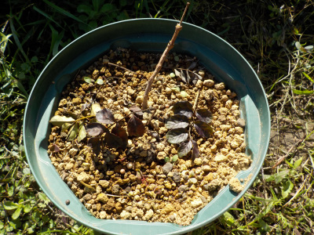
寒くなったので、挿し木のノウゼンカズラの葉が落ちました。
今年はほとんど成長しませんでした。何がまちがっていたんだろう。
【ノウゼンカズラTOP】 【木TOP】 【園芸TOP】
2021/06/26
ノウゼンカズラの花が多いです。
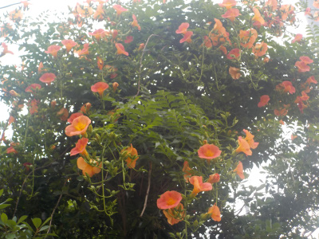
木が大きくなってるみたいで、花がいっぱいです。
絡みついている木を覆っているので何だかわかりませんね。
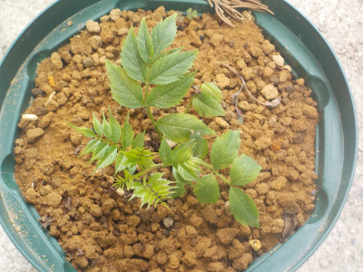
挿し木のノウゼンカズラです。
あんまり伸びていません。そろそろ急激に大きくなったりしないかな。
【ノウゼンカズラTOP】 【木TOP】 【園芸TOP】
2021/06/13
ノウゼンカズラが1本枯れました。
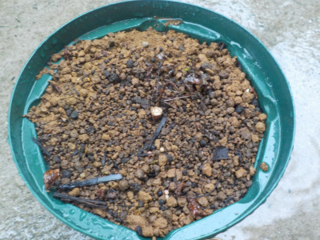
何が悪かったのか分かりませんが、挿し木のノウゼンカズラが1本枯れました。
残念です。
2本まだ残っていますが、あまり成長していません。
環境が悪いのかな？
【ノウゼンカズラTOP】 【木TOP】 【園芸TOP】
2021/05/09
挿し木のノウゼンカズラに根っこはないですが、鉢上げしました。
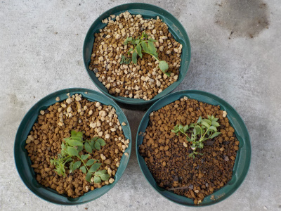
葉っぱが茂ったので根っこが出ただろうと思ったんですが、まだ根っこはありませんでした。
ツタなので根っこが無くても葉っぱ近くの気根で成長出来るんじゃないかと思い、鉢に植替えしました。
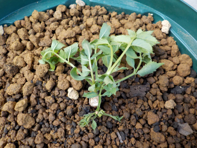
植え替えたとたんに葉っぱがぐったりとしました。
なんか枯れそう。
【ノウゼンカズラTOP】 【木TOP】 【園芸TOP】
2021/04/10
ノウゼンカズラの挿木に根っこがありませんでした。
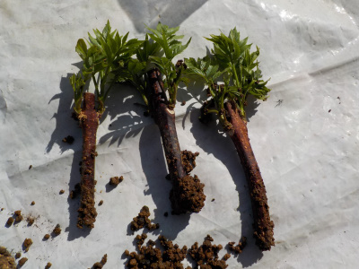
葉っぱが出て成長しているので、根っこが出ているものと思い鉢上げしようとしましたが、
根っこがありませんでした。
このまま植えたら枯れそうな気がするので、再びペットボトルに戻しました。
もう1月くらい様子をみようと思います。
【ノウゼンカズラTOP】 【木TOP】 【園芸TOP】
2021/03/28
ノウゼンカズラの挿木から葉っぱが出ました。
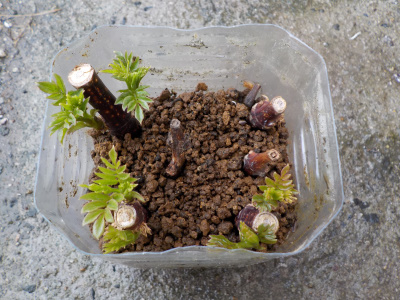
葉が出たってことは根っこも出てるかな。
いま3本出てますけど、残りも出るんじゃないかと期待しています。
ツルは支柱を立てるので、大きめの鉢を用意した方がいいかな。
【ノウゼンカズラTOP】 【木TOP】 【園芸TOP】
2021/01/31
ノウゼンカズラの挿し木は枯れ枝です。
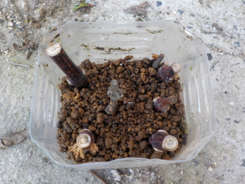
冬なので当たり前ですが、葉っぱが全部落ちて枯れ枝状態です。
新芽が出る場所があるかな？もうちょっと枝を長く切った方が良かったかな？
育つか不安です。
【ノウゼンカズラTOP】 【木TOP】 【園芸TOP】
2020/10/24
まだ葉っぱがあるので、ノウゼンカズラの挿し木に挑戦しました。
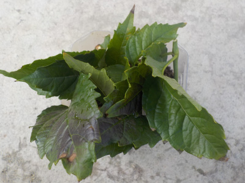
だいぶ寒くなりましたが、まだ葉っぱがあるので挿し木しても育つかな？と思いやってみました。
ペットボトルでの挿し木で雨風に当たらないので、まだしばらくはいいかなと思いました。
ダメだったらまた3月くらいにします。
【ノウゼンカズラTOP】 【木TOP】 【園芸TOP】
2020/09/13
ノウゼンカズラがまだきれいに咲いています。

花が終わったら挿し木をしようと思っていますが、まだ花が咲いているので挿し木が出来ません。
蝶が飛んで来てとってもいい絵だったので写真を撮りました。
自分がいいなって思ったものを写真に撮るのって楽しいですね。
【ノウゼンカズラTOP】 【木TOP】 【園芸TOP】
2020/08/23
ノウゼンカズラが目につかない。
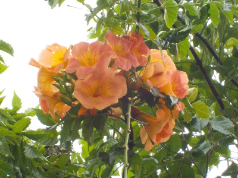
オレンジ色の花が次々咲いて派手なんですが、咲いてる位置が高いのであまり見ません。
なんかもったいない。
ネット情報によると挿し木で増えるようなので、増やして鉢かプランターで低い樹高で育てたいと思っています。
【ノウゼンカズラTOP】
【木TOP】
【園芸TOP】
夏って感じがする花です。
【おいしいものを食べよう。】【たくさん寝よう。】
【ソロ活をしよう!】【季節感のあることをしよう。】【動画視聴はほどほどに。】【当サイトの全てのコンテンツは無断転載禁止です。】